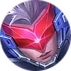
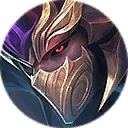
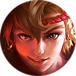

All about assassins
Assassins are agile heroes who use mobility, burst damage, and stealth to eliminate key targets.
Assassins released in chronological order
- 2016Saber

SaberThe Wandering Sword uses blades and swift movement to lock onto and eliminate a target. - KarinaKarinaThe Shadowblade resets her skills after takedowns and excels at finishing weakened enemies.
- NataliaNataliaThe Bright Claw uses stealth to ambush enemies and silence them with quick attacks.
- FannyFannyThe Blade Dancer uses cables to fly across the battlefield and strike targets with unmatched mobility.
- 2017HayabusaHayabusaThe Crimson Shadow uses shadows and swift strikes to isolate and destroy enemies.
- HelcurtHelcurtThe Shadowbringer silences opponents and plunges the battlefield into darkness before attacking.
- LancelotLancelotThe Perfumed Knight dashes through targets and becomes untouchable while dealing burst damage.
- 2018SelenaSelenaThe Abyssal Witch shifts between forms, traps enemies, and lands long-range stuns.
- Hanzo

HanzoThe Akuma Ninja sends his spirit forward to attack enemies while his body remains hidden. - 2019LingLingThe Cyan Finch moves across walls and dives onto enemies with precise sword attacks.
- 2020BenedettaBenedettaThe Shadow Ranger uses dashes and sword strikes to evade danger and punish opponents.
- 2021AamonAamonThe Duke of Shards uses enchanted armor and fragments to vanish and strike from concealment.
- 2022JulianJulianThe Scarlet Raven combines empowered skills to chain attacks and control fights.
- Yin

YinThe Martial Genius pulls an opponent into his domain for a decisive one-on-one battle. - 2023JoyJoyThe Flash of Miracle dashes to a rhythm and deals damage while becoming difficult to stop.
- NolanNolanThe Cosmic Wayfinder tears space with rifts and bursts down enemies caught between them.
- 2025HiraraHiraraHirara uses agile attacks and precise movement to hunt down enemies and control the battlefield.